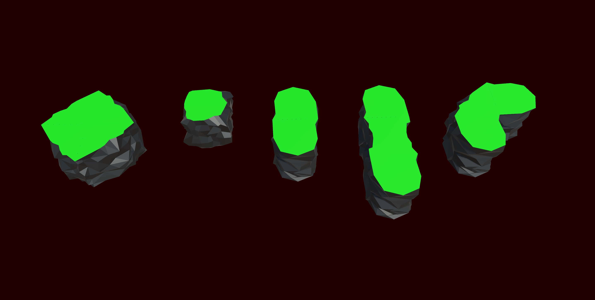
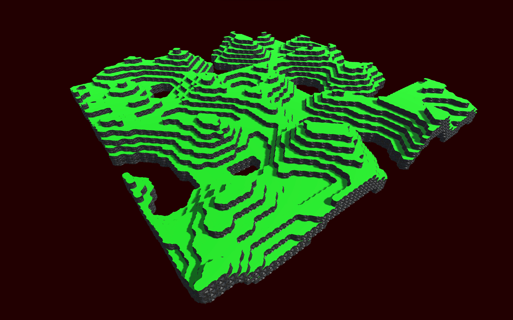
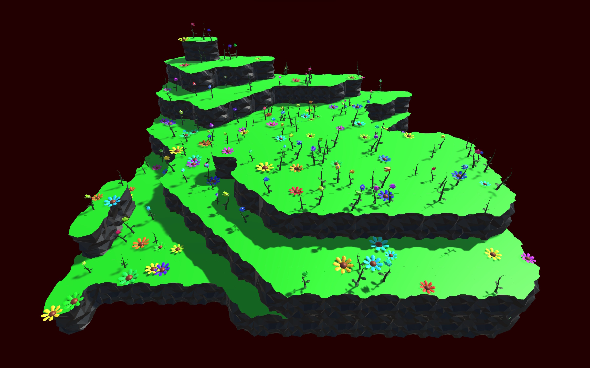

Toolscaper
Toolscaper is a unity tool allowing the convenient creation of procedural meshes from premade tiles, made for a university assignment. It's like Unity's tilemap editor, but with meshes in 3D instead of sprites in 2D!
Mesh tiles can be placed and if they are next to other compatible tiles they will combine into one mesh.
The tool also includes several customisable terrain generators for making landscapes as seen below, like a perlin noise based hill/valley generator.
Also included is a mechanism to quickly place decor atop the generated mesh, for example putting flowers on meadow terrain, or gears and valves onto pipe systems.
